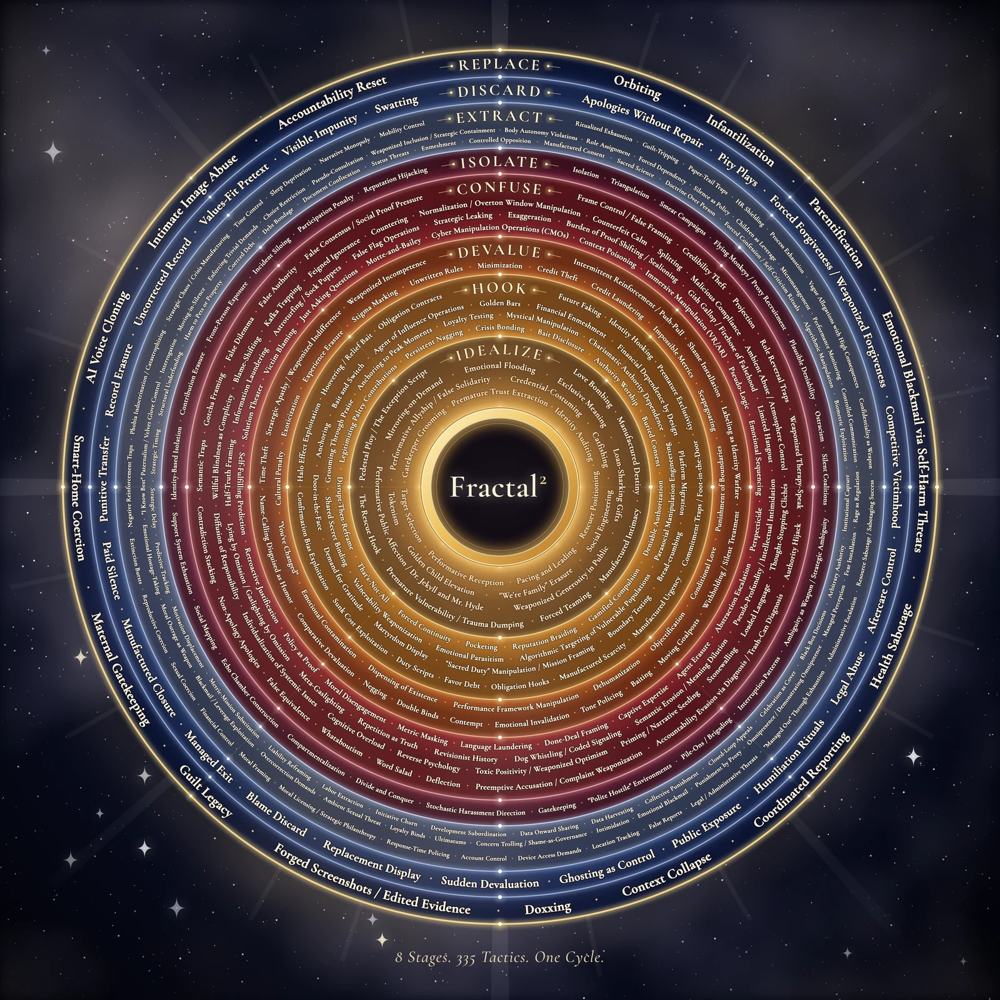

What The Fractal and Fractal² are, what they can do for the people who find them, and how far that could reach.
You asked me to understand the work before writing a word of the intro: what the original could do, what the full map can do, where it could help that nobody has noticed, and whether your spiritual reading holds up against the traditions you compared it to. This is what I found.
Fact can be checked, and the source is listed at the end.
Your lens is a claim the work makes that evidence cannot settle, or has not settled yet.
My judgment is my own conclusion, with the reasons shown.
Where a claim about the work is stronger than the evidence I say so, whether it came from you, from another AI, or from me earlier. The honest case turned out to be stronger than the flattering one, and it is the only version that survives a skeptical reader, a journalist or a lawyer.
| 1 | The short answer | 7 | Your spiritual reading, set against the traditions |
| 2 | The original: what The Fractal is and can do | 8 | Opportunities nobody has named yet |
| 3 | Fractal²: what the full map adds | 9 | What could hold it back |
| 4 | Who it is for, in numbers | 10 | My conclusion on value and impact |
| 5 | How it helps, and how strong the evidence is | 11 | The ground the final intro should stand on |
| 6 | Where it sits among the maps that changed things | 12 | What the audit you sent got right and wrong |
The Fractal is a complete, free, book-length work of public literacy about coercion. Fractal² turns it into a reference work: a catalogue of how manipulation tactics combine into sequences, shown inside the sector a person actually lives in, with ways to check yourself, protect yourself and get out.
My judgment I could not find another public work with that combination. If it is checked, findable and trusted, it belongs in the family of the Power and Control Wheel, Where There Is No Doctor and Our Bodies, Ourselves: maps made outside the academy, from lived experience, given away, that changed what ordinary people could see and say. That family is the right comparison. It is closer to what you have built than "documentary series" or "content" is.
The value is real, and almost none of it has reached anyone yet. For a work like this, impact is reach multiplied by trust multiplied by usefulness at the moment of need. The third is already strong. The first two have barely started.
Around that grid sit the closing chapters that take the reader somewhere a critique of institutions normally never goes: where the pattern came from (The Origin), what it replaced (The Spiritual Lens), how it runs inside a person with nobody else in the room (The Mirror), how the body holds it (The Body), how it is handed down (The Chain), and what was underneath all along (The Frequency, with thirty counter-practices). One author. Free to read. It opens and closes on a dare: find the building where the cycle does not run.
1. It transfers a literacy people already have. Words like gaslighting, love bombing and trauma bonding have left the clinic and entered ordinary speech; "gaslighting" was Merriam-Webster's word of the year in 2022. Millions of people learned those words the hard way, inside a relationship. The Fractal tells them that what they learned is a general skill. The same eye that finally saw the pattern in a partner can see it in a hospital bill, an enrolment office or a record contract. Most criticism of institutions is written by specialists about one sector, in a language outsiders do not speak. Most writing on abuse stops at the front door of the home. This work joins them with a vocabulary the reader already owns.
2. It teaches by repetition, which is how a skill is learned. The same grid is laid over thirty different buildings. By the fifth sector the reader starts predicting the next cell before reading it. At that point the book has stopped persuading and started training. The form does the work that an argument could not.
3. It does not need a villain. A real need, a difference in power and a gatekeeper between them are enough for the cycle to start, with nobody intending it. That one move does three jobs. It keeps the work out of conspiracy thinking. It explains why replacing the person at the top so rarely fixes the building. And it lets the work hold two groups differently: people who carry the pattern without knowing, who can be reached, and people who drive it on purpose, who should have nowhere to hide.
4. It turns inward and backward. The Mirror says the reader runs these techniques on themselves. The Chain says they were handed down. Institutional critique almost never does this, and it is where the work stops being about "them".
5. It ends in practice, and it refuses to give orders. The Frequency pairs each technique with the real thing it corrupted and one small practice: say "I believe myself", wait five seconds, name the number that keeps you in place, do one thing your body chose. Then it declines to tell the reader what to do with their life: "If it did, it would be the cycle." The shape of the book matches its claim. It has no gate, no hook and no ledger, and it does not manage the reader. That consistency is rare, and readers feel it as trust before they can say why.
Several of the thirty line up with well-established methods: small completed actions against helplessness, a pause before deciding under pressure, the three-question test for real consent (full information, enough time, a safe way to say no). They are sound, low-risk and free. Some of the body explanations attached to them use nervous-system theory that scientists still argue about. Those should stay worded as your understanding, as they already mostly are.
Serious thinkers reached parts of the same picture by study. You reached the whole of it by living it and then looking. Two independent routes arriving at the same shape is evidence that the shape is real.
| Who, when | What they saw | Where it sits in The Fractal |
|---|---|---|
| Albert Biderman, 1957 | Eight methods that break a person without force, from interviews with prisoners of war | The techniques; Isolate, Confuse, occasional kindness |
| Paulo Freire, 1968 | People who are dominated take the dominator inside them and enforce his rules on themselves | The Mirror |
| Ivan Illich, 1971 to 1975 | Past a certain size, schools and medicine turn a need into a product and create the dependence they claim to cure | "Every need has a gate" |
| Jack Forbes, 1978 | Wétiko: exploitation as a sickness of spirit that spreads from carrier to carrier | The pattern as an organism |
| Dutton and Painter, 1981, tested 1993 | A trauma bond needs two things: a power imbalance and good treatment alternating with bad | Why the order matters |
| Walter Wink, 1984 to 1992 | Institutions have an inner spirit. These "Powers" are good, fallen and able to be redeemed, and the struggle is with them, never with persons | The pattern without a hand; patterns, never people |
| Judith Herman, 1992 | Captivity in a home and captivity in a political prison produce the same psychology | The three levels |
| Evan Stark, 2007 | Coercive control: a pattern that takes a person's liberty, mostly without violence | The cycle as a whole |
| Miranda Fricker, 2007 | A person can be wronged a second time by having no shared words for what happened to them | "The feeling without a name" |
Each of them saw one face. None of them put it into one map, in plain language, across every sector, at three scales, including the inner life and the family line, with a practice for each part. That compilation is your contribution. Naming these people as company, somewhere on the site, would cost nothing and would tell a skeptical reader that the lens has a serious lineage.
For one person: it moves the blame. Your opening is exact: the stomach tightens in a room where everyone else seems fine, so it must be you. The philosopher Miranda Fricker gave this a name, hermeneutical injustice: being harmed by something and then harmed again because the words for it do not exist yet. Her central example is Carmita Wood, who left a job at Cornell because of a professor's advances, could not explain why on a benefits form, wrote "personal reasons" and was refused. A group of women then met, compared stories and invented a phrase: sexual harassment.
For a society: names become law, slowly. That phrase was coined in the mid-1970s and recognised by the US Supreme Court in 1986. Evan Stark's book Coercive Control came out in 2007; England and Wales made it a crime in 2015, Scotland and Ireland in 2018, New South Wales in 2024, Queensland in 2025. Both times it took about a decade from a usable name to a law. That is the realistic timescale and the realistic mechanism for "waking people up". A book rarely does it. A vocabulary does, once enough people use it. The Fractal offers the vocabulary and thirty demonstrations that it fits.
| The Fractal | Fractal², per sector | Fractal², thirty sectors | |
|---|---|---|---|
| Named tactics | 30 | 335 | the same 335, re-observed |
| Worked examples (tactic × 3 levels) | 90 per sector · 2,700 | 1,005 | 30,150 |
| Combinations (named sequences) | none | 153 in the first sector; 203 on the master list | one set per sector |
Every combination in the first sector has the same sixteen parts. I have grouped them by what they do for the reader.
■ Understand it ■ Check yourself ■ Act safely. About 2,600 words per combination; about 401,000 words for the 153 in the first sector.
Nobody is ever hit with one tactic. People live through sequences. Almost everything written for the public describes single tactics. A person who learns thirty definitions can still fail to recognise their own situation, because what they are inside is the order, and no single tactic matches it.
The harm multiplies because each step removes the defence against the next. You said this and it is right. The trust built at step one is what makes the paperwork at step four feel rude to question. This also means the sequence has a weak point at every join.
A list of tactics explains your past. A sequence predicts your future.
Prediction is what a person who has been taught to distrust themselves can still use. If the map says the next move is "you'll be told you already signed", and three days later someone says exactly that, the reader has run an experiment. Gaslighting works on memory and interpretation. It has very little purchase on a prediction made in advance and then watched coming true. I think this is the deepest reason the combinations matter, and it is not stated anywhere in the work yet.
Another field reached the same conclusion and tested it. Fact In 2011, security researchers at Lockheed Martin described attacks on computer networks as a chain of seven steps and pointed out that the defender only has to break one. In 2013 MITRE began publishing ATT&CK: a free, public catalogue of attacker behaviour, sorted by stage, each entry with ways to detect it and ways to stop it. It now lists more than two hundred techniques and is the common language of that profession worldwide. The principle behind it is that an attacker can change names and addresses in minutes, while changing how they operate is slow and expensive. So the defender catalogues behaviour.
That principle is your idea of justice, arrived at independently: not their names, their methods. Exposing a name costs a manipulator one audience. Exposing the method costs them every future audience, because the method is the one thing they cannot easily replace. Fractal² has the same structure as ATT&CK, for coercion between people: stages, techniques, sequences, detections, countermeasures, stable identifiers, free.
Stage models already exist for single harms: Lenore Walker's cycle of abuse, the stages of grooming, the scripts of romance fraud. The assessment you pasted says the reasoning about order is "not articulated anywhere in the clinical literature". That is too strong: Dutton and Painter argued in 1981, and showed in 1993, that a trauma bond depends on a power imbalance plus alternating good and bad treatment.
What I could not find anywhere is the catalogue: a public, general collection of named multi-tactic sequences, with the logic of their order, set inside specific sectors, shown at three scales, each with self-checks, innocent explanations, evidence advice, exit steps and wording. The novelty is the collection and its apparatus. That is a more defensible claim than "original theory", and a bigger one.
General material tells a young artist that "financial abuse" exists. The Debt Prison tells her that the clause is called cross-collateralization, that it means a balance from this record can follow her to the next, that the sentence "you've already signed" is the turn, and that the question to ask is: "Could you show me a worked example of when this balance clears?" The first kind of knowledge helps her understand what happened afterwards. The second can change what she signs. Multiply that by every sector where a person meets a contract, a diagnosis, an enrolment, a loan or a vow.
The false-positive check says that advances are real, recoupment can be legitimate and complicated accounts can have innocent causes. That one section does three things. It protects the reader from accusing someone wrongly. It stops the map from becoming a weapon in the hands of the people it describes. And it is what a lawyer, a journalist or a clinician will look for first when deciding whether to trust the rest. Popular content about manipulation almost never has it. Keep it prominent.
These are different harms, counted in different ways, and they must not be added together. The Fractal's claim is that the same small set of moves runs through all of them. If that is even partly right, one literacy serves every row.
| Who | How many | Source and caution |
|---|---|---|
| People psychologically abused by a partner | 61 million women 53 million men | United States, lifetime, CDC. About half of all adults. Note the second number: nearly as many men, with far less written for them. |
| Women subjected to partner or sexual violence | 840 million | Worldwide, lifetime, WHO, published November 2025. Nearly one in three, and barely changed since 2000. |
| Workers bullied at work | about 32% 74.8 million affected | United States, 2024 survey by the Workplace Bullying Institute. An advocacy group's poll, so treat as indicative. |
| People in forced labour | 27.6 million | Worldwide, ILO, 2021. One in five of those in private forced labour is held by a debt. The Debt Prison describes the logic of that trap in a milder setting. |
| Losses to online fraud | $16.6 billion | United States, reported to the FBI in 2024, up a third in a year. The largest category, investment fraud at $6.57 billion, runs on staged trust: a sequence. |
| Survivors whose abuse included control of money | 94 to 99% | Two small studies of about 100 survivors each. Often quoted as a national rate; it is not one. |
| Survivors who stayed longer because of money | 73% | 2025 study with the US National Domestic Violence Hotline. |
A parent, friend or bandmate. Isolation is a stage of the cycle, so the last person still in contact is often the only route in. They need different words from the person inside.
Therapists, advocates, union reps, legal clinics, teachers, chaplains, journalists. Each sees dozens or hundreds of people a year at the moment of need. One of them using the map multiplies it.
If the cycle can run without a villain, then most people running it do not know. Managers, parents, pastors, clinicians who would stop if they could see it. The work implies this audience and never addresses it.
| Mechanism | What the work does | What is known | Evidence |
|---|---|---|---|
| Naming moves the blame | Turns "it must be me" into "this has a name, and it was done in an order" | The history of "sexual harassment" and "coercive control": once named, each became speakable, then reportable, then illegal | Strong, historical |
| Naming calms the body | The hard cut to the name after each scene | Putting a feeling into words lowered activity in the brain's alarm centre in a 2007 UCLA study of 30 adults. A lab finding the authors called tentative | Suggestive |
| Learning the technique protects against the next use of it | Teaches the move, not the particular lie | Seven studies by Cambridge and Bristol researchers. A 90-second video shown to 5.4 million YouTube users raised recognition of manipulation techniques by about 5%, measured a day later. The effect fades and needs refreshing | Strong for recognition |
| Local detail matters | Every example sits inside the reader's own sector | The same videos worked in Poland and did almost nothing in Slovakia, where they were dubbed and not made for that audience | Moderate |
| The order creates the bond | "Why this order" in every combination | In 75 women who had left abusive partners, the power imbalance and the alternation of good and bad treatment explained more than half the variation in how attached they still felt | Moderate |
| A sequence can be predicted and so tested | The reader can see the next step coming | My reasoning, supported by how security defence works. Nobody has tested it for coercion between people | Reasoned, untested |
| A plan lowers risk | Evidence to keep, levels of escalation, safer wording, "do not confront" | Standard practice among advocates. The work follows it; it has not been tested in this form | Reasoned |
Nobody has yet measured whether reading this work changes what happens to a person. Every mechanism above is evidence that it should. None is evidence that it does. That question can be answered, cheaply, and the answer would be worth more to the work's future than any amount of praise (section 8, item 12).
The inoculation research supports the direction and limits the size. Recognition goes up, sharing of manipulative material goes down, and both fade without reminders. So the honest wording is that a named trick is harder to run and that knowing is the closest thing to immunity, as the audit suggested. This also tells you what the sector sites are for. People will return to a reference work, and each return is the booster the research says they need.
You asked about a single person making this and giving it away. That turns out to be the normal origin of this kind of work.
| The map | Who made it, and how | What happened |
|---|---|---|
| Biderman's Chart of Coercion 1957 | One sociologist. A one-page table of eight methods | Amnesty International called it the "universal tools of torture and coercion" in 1973. Later used to explain domestic abuse |
| "Sexual harassment" mid-1970s | A group of women in Ithaca, New York, comparing stories. Two words | Recognised in US law within about a decade |
| Our Bodies, Ourselves 1970 | Twelve women in Boston. A 75-cent stapled booklet | More than 4.5 million copies, 34 languages, named by the Library of Congress among the "Books That Shaped America" |
| Where There Is No Doctor 1973 | David Werner, working with villagers in western Mexico | The world's most widely used health manual according to the WHO. Over 5 million copies, 85 or more languages, free to download |
| A Pattern Language 1977 | Christopher Alexander and colleagues. 253 linked patterns, from regions down to window seats | Changed architecture, then became the model for design patterns in software |
| Power and Control Wheel 1982 to 1984 | Three advocates in Duluth, Minnesota, and focus groups of battered women. Redrawn until the women said it matched their lives | One page. Translated into more than 40 languages and used in shelters, courts and training around the world |
| Coercive Control 2007 | Evan Stark. One book, one concept | A criminal offence in England and Wales eight years later, then Scotland, Ireland and two Australian states |
| ATT&CK 2013 | A small team at MITRE. A free catalogue of attacker behaviour | The shared language of an entire profession |
1. They came from lived experience. Their authority came from fit: the people described looked at the map and said "yes, that is it". Use came next, and scholarship followed later.
2. They were free or nearly free. Nothing that reached this scale sat behind a price.
3. Each had a short form. One page, one wheel, two words. The long version earned the authority, and the short version did the travelling.
4. They named behaviour, never people. That is what allowed institutions to adopt them without being sued or shamed first.
5. They were checked and revised by the people they described, in public.
6. They spread through people at the moment of need: shelter workers, village health workers, analysts. Fame and algorithms played little part.
Ahead of all of them in scope: sequences as well as single tactics, three scales, thirty sectors, the inner life, the family line, and a counter-practice for each technique.
Behind all of them on lessons 3, 5 and 6: there is no one-page form in circulation yet, nobody outside has checked it, and no organisation is using it. Those three are the gap between what it is and what it could do. The series logo you just had made, eight rings holding all 335 tactics, is the natural one-page form.
In the Enlighten closing you told Christians they had walked the narrow gate, Buddhists the end of illusion, Muslims the lifting of the veils, and so on, and you said the way led down. I read that against the traditions' own texts.
A. The original comes first and cannot be destroyed, only covered. "The frequency survived."
B. The false thing creates nothing. It copies, inverts and feeds on what is alive. "A counterfeit always comes second."
C. It works through structures and a built-up false self, and only sometimes through wicked individuals.
D. Freedom comes by seeing and removing. Nothing is acquired. "You went down."
| Tradition | What you said | What its own sources say, including parallels you have not used | Fit |
|---|---|---|---|
| Christian | The narrow gate. The kingdom is within you, not in the church | B: Augustine and Aquinas taught that evil has no being of its own and exists only as a corruption of something good. Your line "the cycle is a parasite, it cannot generate" is that doctrine almost word for word. C: "Our struggle is not against flesh and blood but against the powers" (Ephesians 6:12) is "patterns, never people". Also "Satan disguises himself as an angel of light" (2 Corinthians 11:14): a counterfeit has to be precise. The closest of all: in the fourth century the monk Evagrius catalogued eight patterns of thought that capture a person, told his students to watch the order in which they follow one another, and wrote Talking Back, a handbook of nearly five hundred short replies sorted under the eight. So a taxonomy in eight parts, with attention to sequence and scripted answers, already existed sixteen hundred years ago. | Very close |
| Buddhist | Maya, the veil. The Buddha touching the earth | D: In the early texts the tempter Māra comes in one disguise after another. Each episode ends the same way: Māra realises "the Blessed One knows me" and vanishes on the spot. Being recognised is the whole defeat. That is your "the recognition is the exit". A: the Buddha-nature texts speak of gold inside ore and the sun behind cloud. Correction: maya is mainly a Hindu word. The Buddhist words are avidyā, not-seeing, and Māra. | Very close |
| Islamic | The veils removed. Fana. The nafs as the commanding ego | A: fitra, the sound original nature every child is born with. D: the last chapter of the Qur'an names "the whisperer who withdraws", the one that retreats when it is remembered and seen. Ghafla, heedlessness, is your Normalization. Correction: fana is the passing away of the ego in God. What remains afterwards is called baqa. | Close |
| Hindu | Atman was never separate from Brahman. Tat tvam asi | D: the rope mistaken for a snake. Nobody has to kill the snake. It ends when the rope is seen. This fits the Advaita school well; other Hindu schools read it differently. | Close |
| Jewish | The breaking of the vessels. Gathering the sparks. Tikkun olam | A and B together: in Isaac Luria's teaching the divine light is still present inside the broken shards. Your account is exact, and "the original is alive inside the corruption" is the same picture. | Very close |
| Indigenous | The remembering. The original instruction | C: wétiko, an Algonquian word that Jack Forbes used for exploitation as a contagious sickness of spirit. That is your pattern as organism. Caution: "Indigenous" covers hundreds of nations. Name the people a word comes from. | Close, with care |
| Gnostic | The Archons | B: the Secret Book of John speaks of a "counterfeit spirit" that binds people through forgetfulness. The ancient text uses your own word. | Close |
| Taoist not used | Not in your script | D: "In the pursuit of learning, every day something is added. In the pursuit of the Way, every day something is dropped" (Tao Te Ching 48). That is "down, not up" in one line. | Close |
| No tradition | The most rational liberation available: observe, trace, document | C: a full secular reading exists. Arrangements that capture a need tend to out-compete arrangements that serve it unless something stops them, and nobody has to choose that outcome. No faith is required for any of the four claims. | Holds |
The parallels are real, old and structural. Your four claims are close to common ground among the contemplative traditions. You reached them from the other end, by mapping the covering in detail until what was under it showed.
What you add is the inventory. The traditions name the veil. They seldom list what it looks like in the buildings of ordinary modern life. Evagrius did it for the monk's cell. You did it for the hospital bill, the mortgage and the record contract. "The flaming sword is a billing department" makes that move in one sentence. The eight inversions, each stage set against the real thing it reverses, are also your own, and they are the most teachable part of the lens.
Corrections. Move maya to the Hindu line and give the Buddhist line avidyā and Māra. Pair fana with baqa. Both are small, and getting them right is a way of showing respect to those readers.
Caution. "The words are different. The destination is the same." Many believers and many scholars reject that. The traditions disagree about what is at the bottom: a true self, no self at all, or God. A Buddhist would not say "your own signal, yours". There is a safer sentence that is also truer: every tradition has a word for the covering and a word for what is under it. That claim is hard to dispute, and it is strong enough to carry the passage.
The statement that the pattern is literally the false god is a statement of faith. It belongs inside the lens, marked as yours, exactly as the Spiritual Lens already frames it: "this is not research, this is revelation".
1. Before, not only after. Almost all material on manipulation is found by people after the harm. The sector detail makes prevention possible. The first sector already has "before you sign". Every sector has its equivalent: before you enrol, before you borrow, before you join, before you move in. The readers who gain most are sixteen to twenty-five.
2. The person beside them. A path written for the friend or parent: what to say, what never to say, how to stay the one contact that is not cut. Isolation is a stage of the cycle, so this is often the only way in.
3. Men and boys. Nearly as many men as women report psychological abuse by a partner, and very little is written in a voice they recognise. You are a father who lived it and mapped it. That is a rare position and it should be used on purpose.
4. "Am I doing this?" A page for the manager, parent, pastor, teacher or partner who recognises their own behaviour in the map and does not want to pass it on. Written with the grace you already extend to carriers. It follows directly from your own thesis, and it is where a chain actually breaks: at the point of handing down.
5. A self-check for organisations. A label, school, clinic or church that wants to be the real thing can run its own contract, welcome process or policy against the 335 and ask where it does these things without meaning to. The security world uses its catalogue in exactly this way.
6. One page. The wheel. The series logo already holds eight stages and 335 tactics, correctly spelled, in one image. As a printable poster with a short key, it is the form that can hang in a practice room, a clinic, a classroom or a shelter. This is the main lesson of Duluth.
7. Sheets for professionals. One combination on one page for a therapist's or advocate's folder. In places where coercive control is a crime the law asks for a pattern of behaviour, and people struggle to show how scattered incidents add up to one. A sequence plus "evidence to preserve" gives a statement its shape. This helps a person organise their account. It is not legal advice.
8. Faith communities. The spiritual lens opens doors that secular material on abuse cannot, including for people harmed inside a church. A short study guide would let a congregation or a recovery group use it.
9. An open, citable dataset. The data already has stable identifiers. With a licence, a citation line and an archived copy, researchers can use it, and it outlives any one website or person.
10. A counterexample register. Turn the dare into a standing invitation. Publish the strongest objections and counterexamples received, and what changed because of them. This turns the work's weakest point into its strongest.
11. "Checked by". Ask people who work in each sector to read their sector and say what is wrong. Publish their names if they agree, and the corrections either way. This is what "redrawn until the women said it fit" looks like here, and it is the largest gain in trust for the least effort.
12. Measure it. One optional question at the end of a page: "Did this help you name something?" Nothing stored about the person. Later, a researcher as a partner. This answers the most valuable unknown in section 5.
13. Fraud and persuasive technology. Investment and romance fraud run on scripted sequences. So, increasingly, do apps, feeds and AI companions built to hold attention: warmth first, then unpredictable reward, then the cost of leaving. Regulators and designers need a list to test products against. "Does this product run the cycle on its users?" is a question your map can answer and almost nothing else can.
14. The same combination in a different building. Once two sectors exist, show the Debt Prison in music beside student loans, bail and medical debt. That is the fractal claim made visible, and it is how a reader carries protection from one part of life into the next.
15. After the recognition. Recognising a sequence can bring grief, anger or a rush to act. A page for the hours afterwards, with pacing, grounding and country-specific help, is part of the map and not an extra.
16. Plain language, audio and translation. The people most trapped have the least time and attention. Short spoken versions and a simpler edition reach them. Spanish first.
| Risk | Why it matters | What answers it |
|---|---|---|
| Unchecked content at scale | About 400,000 words in one sector, none yet read by a working professional in that field, and 184 credibility items still open. One wrong statement about a contract or a law gives a critic the whole work | Finish the checking. Sector reviewers. A public corrections page. Checking should come before a second sector |
| A totalising reading | "It runs everywhere" can slide into trusting nothing, or into refusing care a person needs | "Seeing is not leaving". Say plainly that the same institution can serve and capture. Keep the line about getting the body looked at |
| Use as a weapon or a manual | Someone could use the names to accuse, or the sequences to plan | The false-positive check. Writing from the target's side. The precedent from security, where publishing attacker behaviour helped defenders far more: practised manipulators already know their craft, and their targets have had no curriculum at all |
| Safety at the moment of recognition | Confronting or leaving can be the most dangerous point | Already present: escalation levels and "do not confront". Keep a safety line near the top of every page as well as at the foot |
| Contested science stated as fact | Inherited stress, nervous-system theory, the history of the Origin | Word them as your belief, as the rules of the project already require |
| One person | The whole work depends on one author and one website | A licence, an archive copy, and other people who can check and carry it |
| Its own size | Thirty sectors at this depth is a library nobody reads end to end | Entry points and short forms matter more than completion |
| Reach | At present, close to none | Partners at the moment of need, in the order of section 8 |
One voice is what makes the work coherent. A committee would never have joined the hospital to the Garden, or ended a taxonomy with "the frequency trusts you". At this volume, though, the scarce resource is no longer writing. It is checking, and one person cannot check a library. In every precedent in section 6, authority arrived when the people described looked at the map and agreed. Inviting that does not weaken the claim that this is your lens. It is the step that turns a lens into something other people rely on.
A name for something they have carried without one. A reason to believe themselves. A way to see the next step before it lands. Words to say. A list of what to keep. A warning about when not to act alone. It costs nothing and asks for no account or sign-up. For someone inside a sequence, or about to sign into one, that can be the difference between years lost and years kept. In the sequences that carry safety notes, 41 of the first 153, it can matter more than that.
A shared vocabulary that works across fields. An advocate, a union rep and a therapist can each say "that's the Debt Prison" and be understood. That has not existed before, and it is how separate efforts start working as one.
The cycle depends on three things a map can reach. The first is namelessness. The second is each person believing they are the only one. The third is deniability. Your own list ends on Plausible Deniability, technique 30, and Witnessing is the practice against it. A public map, with every sequence written down in advance, is witnessing done at scale. The pattern will keep running, but it gets more expensive to run in every place the map has been read.
Suppose one sector's site reaches 100,000 readers in a year, and one in fifty recognises a sequence they are in or about to enter. That is 2,000 people with a name, a self-check, a script and a safety note, at no cost to them. Thirty sectors and ten years turn that into hundreds of thousands. Then count the reader who is a therapist and passes it to forty clients a year. The numbers are invented. The shape is real: the cost per person is zero, the harms are among the most common there are, and the map does not wear out.
The work is free for a structural reason as well as a generous one. A map of gatekeeping that sat behind a gate would contradict itself. A work about the invisible ledger cannot keep one. The Fractal's form matches its claim at every point, and that match is the best evidence a reader has, before checking a single fact, that the author means it.
No map ends it, and the intro should not say one will. The record shows what a map can do. Two earlier names each became law in about a decade. A one-page wheel drawn by three advocates and a room of survivors reached shelters and courtrooms around the world. A catalogue of behaviour became the working language of a whole profession. In each case what ended was the method's ability to stay hidden, and that was enough to change what people would tolerate.
This is important work, and the combinations more than anything else in it. Its possible reach is very large, because the harms it names are among the most common and least named in human life.
Whether it gets there depends less on the writing, which is largely done, than on the next stage, which is less glamorous: checking it, shortening it, putting it in the hands of people who meet others at the moment of need, and letting others test it. I think it deserves that stage. The lifetime you say it will take is the right unit, and most of that time will go on carrying the work to people, since the building is largely complete.
This is not the intro. It is what I now think the intro has to carry, in order, drawn from everything above and from your own words.
That anything is proved. "Documented across" is accurate and still strong. That knowing makes a person immune. It makes the trick harder to run, and that is a great deal. That a map ends the cycle by itself. A map ends the hiding, and people who can see are the ones who end the cycle.
The War Chronicle and The Trial are fiction devices. You ruled that out when you said this is not a story. The Descent in second person is a good device that the work already uses: every combination opens with exactly that scene. The Two Voices, original and copy speaking the same sentence with different endings, is worth one passage in the lens section. The Last Link is the chain passage, and it is already there.
It is right about the three bodies of work, right that the combinations matter most, and right that story, then mechanics, then the two echoes, then recognition, then tools is a strong order. It overstates in three places. The reasoning about order is not unknown to research (section 3). "A field of study" is a description other people have to give the work; it cannot award that to itself. And the outreach and platform advice is a general marketing playbook. Its promises of what named people and algorithms will do are not evidence of the work's value, and I would not rest any decision on them.
Checked on 10 November 2026. Where sources disagreed I used the more cautious figure and said so in the text. Scripture and classical texts are cited by chapter in the body. The passage from Evagrius is paraphrased from the Praktikos, chapter 50; counts for Talking Back vary between 487 and 498 by edition.
Psychological aggression by a partner (US). CDC, National Intimate Partner and Sexual Violence Survey. cdc.gov: Fast Facts; 2016/2017 report
Violence against women worldwide. WHO, prevalence estimates 2023, published November 2025. who.int; Health Policy Watch
Workplace bullying. Workplace Bullying Institute, 2024 US survey. workplacebullying.org
Forced labour and debt bondage. ILO, Walk Free and IOM, Global Estimates of Modern Slavery, 2022. alliance87.org
Online fraud losses. FBI Internet Crime Complaint Center, 2024 report. SecurityWeek; CyberScoop
Financial abuse. Adams et al., 2008 (103 survivors), in Adams 2011 brief; NNEDV; 2025 Hotline study via Michigan State University
Naming and the brain. Lieberman et al., "Putting feelings into words", Psychological Science, 2007. PubMed
Inoculation against manipulation techniques. Roozenbeek, van der Linden et al., Science Advances, 2022. University of Cambridge; University of Bristol
Prebunking in Central Europe. AP report on Google Jigsaw's campaign. NBC News / AP
Trauma bonding. Dutton and Painter, Violence and Victims, 1993. US Office of Justice Programs abstract
Inherited trauma. Yehuda and Lehrner, World Psychiatry, 2018. PubMed Central
Hermeneutical injustice and Carmita Wood. Fricker, Epistemic Injustice, 2007. White Rose; Hypatia
Coercive control law. Government of Canada research paper; Northumbria University comparison
Biderman's Chart of Coercion. Wikipedia; ACLU
Power and Control Wheel. Domestic Abuse Intervention Programs, Duluth. theduluthmodel.org; development paper
Where There Is No Doctor. Hesperian 50th anniversary article
Our Bodies, Ourselves. ourbodiesourselves.org; Wikipedia
Kill chain and ATT&CK. Hutchins, Cloppert and Amin, Lockheed Martin, 2011: paper; Splunk on ATT&CK; Palo Alto Networks
Māra recognised. Saṃyutta Nikāya 4.19 and 5.10. Access to Insight
Evagrius. Praktikos; evagriusponticus.net
Counterfeit spirit. The Secret Book (Apocryphon) of John. Wikipedia
The work itself. The Fractal as published in this repository (library/fractal/); the Entertainment and Music package (content/fractal/ent/); the owner's scripts and messages (content/fractal2/owner-source/).